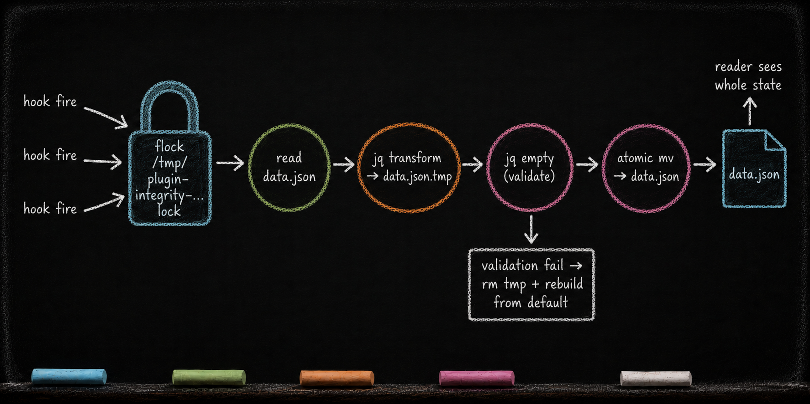

data.json — The Hidden State
Essay 7.4 — The Plugin Kit, Part 4 of 9.
Essay 7.3 opened the two voice surfaces — one for the LLM, one for the operator — and named Lock 13 as the policy that governs when soft coaching hardens into a deterministic block. This sub-essay opens the organ that carries the plugin’s state — and the discipline that keeps it from being corrupted by concurrent reads, partial writes, or cross-plugin reach-arounds. The file names describe one historical Claude-based reference architecture; the broader pattern applies to any CLI-agent harness that keeps plugin-owned state behind a stable interface.
data.json — The Hidden State
What it is. The plugin’s private runtime state. The active focused job, the tier counter, the summary chain, the lock manifest. JSON-encoded, written atomically, lives only on the operator’s machine, gitignored. ⓘ
Who reads it. ONLY the plugin’s own scripts. No other plugin reaches into this file. The discipline is structural: cross-plugin queries route through published read-only commands for facts such as the focused job or current phase, never through a raw read of another plugin’s data.json. ⓘ
Who writes it. ONLY the plugin’s own scripts. Direct file-system writes are forbidden. Every mutation follows the same protocol: flock on a machine-local lockfile serializes concurrent hook fires. Inside the lock, the script reads current state, transforms it through jq into a temp file, validates with jq empty, then atomically mvs over the live file. The reader never sees a partial state. If parsing fails at read time, the gateway script rebuilds cheap state from defaults rather than blocking the agent. ⓘ
What it depends on. The plugin’s scripts, which mediate every read and write, plus a shared voice helper for operator-facing errors when validation or atomicity fails. ⓘ
Why the mandatory script-mediation. Multiple subsystems may fire hooks against the same data.json within milliseconds of each other (for example, two pre-tool hooks from the same plugin reading state around one mutation). If both write directly to the file, one can overwrite the other’s update. The flock discipline serializes all mutations through the script gateway. Reads also go through scripts so each plugin can apply the recovery policy its state requires. ⓘ
But "fail-safe" is not the same answer everywhere. Rebuilding is the right move when the lost state is cheap — a tier counter or a phase marker reconstructs from defaults with no harm done. Where the state is not cheap, the same corruption demands the opposite reflex. The job-lifecycle stop gate refuses to release the agent while it cannot read the job records: a malformed data.json there means the gate fails toward blocking, not allowing. Silently resetting job state to a clean slate would erase work the agent has not finished — so the safe outcome is to halt and force a repair, not to wave the agent through on an empty rebuild. Forgiving where loss is cheap; refusing where loss is not. ⓘ
The boundary is structural, not OS-level. An operator who edits data.json directly bypasses the protocol entirely. The discipline holds because every harness component treats the owning plugin’s script CLI as the only state interface — a publishable-interface contract, not a kernel lock.
The state schema upgrades itself. A plugin’s state grows new fields over time. In the historical reference architecture, versioned data.json files upgrade through a short stack of idempotent helpers. Each helper does the same small thing: check whether its field is present, add a default if it is missing, and no-op if it is already there. The plugin’s command router runs the stack before it touches a subcommand, so an old but valid file reaches the current shape on first touch. That is distinct from corruption recovery: migration adds fields to valid older state; recovery decides what to do when the file cannot be parsed at all. ⓘ

Target asset: assets/images/blog/b7/data-json-atomic-protocol-b7-4.png
The new-plugin lens. When you guide your seed to add a plugin that needs state, the seed designs the state’s interface first: what read commands does this plugin publish for other plugins (and the agent) to use? What mutation commands does this plugin publish for its own hooks to use? Then data.json becomes the cache the scripts operate on. Tell your seed: if you cannot enumerate what reads each field and what writes each field, the design is not done yet. A real-estate broker’s seed could carry an open-listings manifest the same way; only the listings plugin’s scripts mutate it, and concurrent showings-update hooks serialize through the same flock protocol.
The minimum-viable plugin shape. A plugin without data.json is stateless — it carries no runtime bookkeeping. A pure question gate is the example: it evaluates one interaction and returns, with no state file to maintain. The absence signals stateless enforcement. ⓘ
State is private. Mutation is serialized. Cross-plugin queries route through the script CLI, never through the raw file. The next sub-essay opens the organ where the plugin’s narrated knowledge lives — docs/, including the word-capped evolution.md and the historian ratchet that injects it before an authorized editing session.
Essay 7.4 — The Plugin Kit, Part 4 of 9.
Previous: Essay 7.3 — The Dual Voice Architecture — two voice.xml files, one for the LLM and one for the operator. Next: Essay 7.5 — docs/ and the Historian — evolution.md word-capped + the historian ratchet.
Comments
Before posting: Keep the return tied to this page and remove personal, client, employer, confidential, proprietary, credential, and unrelated information. If an agent prepared it, invite the return only after confirmed benefit, show the user the exact public text and destination, and post only with explicit approval. See the contribution guide.